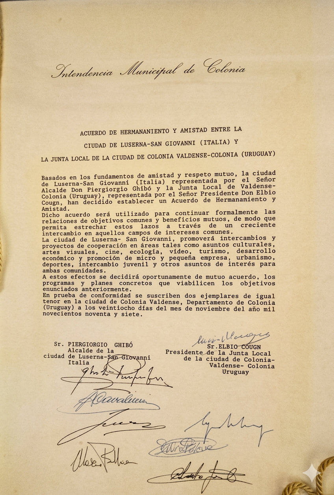

Colonia Valdense y Luserna San Giovanni
Un hermanamiento que une historia, cultura y comunidad
Las ciudades de Colonia Valdense (Uruguay) y Luserna San Giovanni (Italia) mantienen un profundo vínculo histórico y cultural originado en la inmigración piamontesa del siglo XIX.
Este lazo, construido a partir de la historia compartida de sus comunidades, fue formalizado institucionalmente mediante un acuerdo de ciudades hermanas firmado en noviembre de 1997, con el propósito de preservar y fortalecer una relación que trasciende fronteras y generaciones.
Origen histórico de la relación
La conexión entre ambas localidades nace del movimiento religioso de la Iglesia Valdense y de la diáspora de sus comunidades europeas.
Luserna San Giovanni se encuentra a la entrada del Valle del Pellice, en la región del Piamonte italiano, territorio que durante siglos fue uno de los principales centros políticos, culturales y religiosos del pueblo valdense.
Desde esta región montañosa, numerosas familias emigraron hacia América del Sur durante el siglo XIX en busca de libertad religiosa y nuevas oportunidades.
En Uruguay, estos inmigrantes fundaron Colonia Valdense, donde lograron mantener vivas mucas de sus tradiciones:
- La cultura del trabajo agrícola
- La organización comunitaria
- Su fe protestante histórica
- Un fuerte sentido de identidad cultural
Este legado continúa siendo hoy uno de los pilares de la identidad de la ciudad.
El acuerdo de ciudades hermanas
En noviembre de 1997, ambas localidades formalizaron su relación mediante un acuerdo oficial de hermanamiento.

El objetivo principal de este pacto es mantener un vínculo activo entre las comunidades de Italia y Uruguay, promoviendo:
- Intercambios culturales
- Cooperación institucional
- Proyectos educativos y sociales
- Encuentros entre familias descendientes de inmigrantes
A través de las comisiones de hermanamiento en cada ciudad, se desarrollan iniciativas destinadas a preservar la memoria histórica y fortalecer los lazos entre las nuevas generaciones.
Encuentros y actividades recientes
A finales de febrero y comienzos de marzo de 2026, una delegación oficial de Luserna San Giovanni visitó Uruguay para renovar el compromiso de cooperación entre ambas ciudades, a casi tres décadas del acuerdo original.
Durante la visita se realizaron reuniones institucionales y recorridos por distintos espacios representativos de la comunidad, incluyendo centros educativos, escuelas agrarias y emprendimientos productivos vinculados a la tradición agrícola de la zona.
Como parte de esta agenda de integración, se está organizando un viaje de familias uruguayas a Italia entre octubre y noviembre de 2026, iniciativa que permitirá profundizar los vínculos entre descendientes de inmigrantes y fortalecer el intercambio cultural.
Este proceso será también una preparación para una fecha especial: el 30º aniversario del hermanamiento, que se celebrará en 2027.
Un vínculo vivo entre dos comunidades
El hermanamiento entre Colonia Valdense y Luserna San Giovanni representa mucho más que un acuerdo institucional.
Es una relación basada en historia compartida, memoria familiar y cooperación entre comunidades, que continúa renovándose a través del encuentro entre personas, instituciones y nuevas generaciones que mantienen vivo el legado de quienes iniciaron este camino.